It was still dark when we woke up on that day. Maybe it was around 5 am… We had to leave Izumo City very early in the morning to get to our next destination, Hagi City in Yamaguchi prefecture. We took the 6:00 train and it was almost around noon when we arrived at Higashi Hagi Station. There are not many trains running in this area… Even some local people were shocked to know that we traveled the distance by train. But why not? Take time! I love traveling by train.
We saw several small fishing villages on the way. Calm and tranquil… I love the landscape.
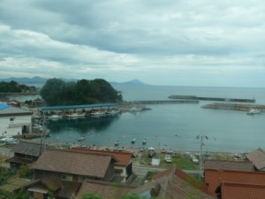
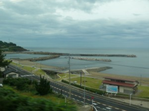
And a beautiful coast line. The train sometimes ran through the mountains, too.
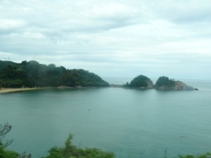
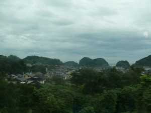
Good news was our hotel was next to the station. We had a really nice stay at Hagi Royal Intelligent Hotel. The room was spacious and very clean. Good services too! Oh, of course, reasonable. In the room we also found some puzzle rings and darts… To kill time? But we didn’t have any time at all to play with them. Our schedule is always tight!
They accepted our early check in with no problem. We deposited our baggage in the coin locker in the hotel and immediately started exploring the city. But it was quite a walk from the hotel to the center of the city…We took the wrong way, too… Fortunately, we are good walkers! If you are not, you can rent a bicycle at the hotel.
—–Hagi City——
Hagi is a small city developed at the delta, facing the sea of Japan on one side, and surrounded by mountains in the other directions. It is very unique and beautiful.

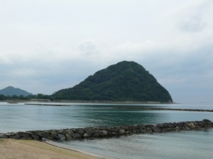
Hagi is also well-known as the home ground of the Choshu Domain, a feudal domain of Japan during the Edo period. It’s kind of an old name of this prefecture. The Choshu Domain was ruled by the descendants of the great warlord Mori Motonari (1497–1571), who extended his power all over the Chugoku Region.
Oh, I love Japanese history… Here I’ll show how our history went.
After Mori Motonari’s death, his grandson Mori Terumoto became daimyo (feudal lord) and formed an alliance with Toyotomi Hideyoshi (another daimyo warrior expanding his territory all over Japan in the 16th century), who had to later fight a big battle called Sekigahara-no-tatakai (the battle of Sekigahara) with Tokugawa Ieyasu (the founder and first shogun of the Tokugawa shogunate).
The result was, as is well known, the Hideyoshi side suffered a bitter defeat.
Mori Terumoto was trusted by Toyotomi Hideyoshi (*Hideyoshi was already dead because of sickness, and his son was going to take his place), but one of his family betrayed during the battle. Terumoto’s cousin, Kikkawa Hiroie, made a deal in secret with Tokugawa Ieyasu. And what is worse, Hideyoshi’s adopted cousin, Kobayakawa Hideaki, also joined the Tokugawa side. They knew the Tokugawa side had more power.
And Mori Terumoto himself left Osaka Castle, where he was serving as a commander, without fighting.
After the battle, the Mori clan was expecting to keep their status because they made a deal with Tokugawa Ieyasu. However, to their disappointment, their power was reduced.
At this point, their hatred toward the Tokugawa shogunate was born, and this anti-Tokugawa feeling was carried on until Bakumatsu (the final years of the Edo period). Every year the clan’s New Year’s meeting was held, and instead of saying “Happy New Year,” the senior vassals would ask, “when shall we start a battle (to overthrow the shogunate)? ” And the daimyo lord would reply, “Not yet. It’s still early.”
And they would sleep with their feet toward the east where the shogunate was (to express their feeling of indignation).
Their long-desired wish was eventually realized at Bakumatsu, when they established an ally with the Satsuma Domain (present-day Kagoshima Prefecture) to gather forces (the Satcho Alliance). With their increased military power, they combatted the Tokugawa Shogunate and succeeded in making a new epoch.
Both Satsuma and Choshu produced a number of reputable samurais. Here I introduce famous Choshu samurais.
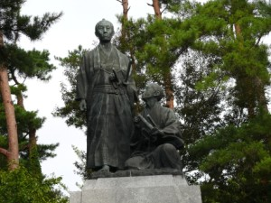
Yoshida Shoin (1830–1859)
1, Yoshida Shoin was a great educator in the closing days of the Tokugawa Shogunate. He attended Meirinkan school (one of the three major educational institutions in Japan) at age eight and gave a lecture there at age nine! The Mori daimyo was so impressed by his intelligence. Shoin devoted almost all his life to developing and training the young called “Ishin Shishi,” political activists who were later going to lead Japan to the Meiji Restoration.
Shoin was also keen to learn about the West. When Matthew Perry, commander of the United States Navy, came to Japan, Shoin attempted to get access to Perry’s ’black ships,’ which was at anchor in Edo Bay (Tokyo Bay). But unfortunately he ended up in a jail after captured by the Tokugawa troops. He was, then, sent back to Hagi, and there he had no liberty of traveling. Despite his misadventure, he kept a strong will to teach military arts and politics to young people in Hagi.
One of his pupils was Takasugi Shinsaku.
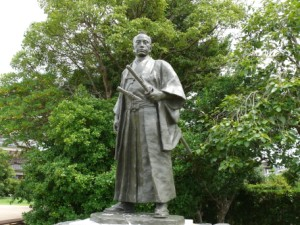
Takasugi Shinsaku (1839–1867)
2, Takasugi Shinsaku was one of the members at Shoka Sonjuku (Shoin’s private school) and contributed a lot to the Meiji Restoration.
At first, he opposed to opening the ports in Japan to the world, but he started to change his mind when he visited China, where he saw the Qing Dynasty being colonized by the Western countries. He was shocked at the sight of Chinese people lowering their bodies when they walked past the westerners. He strongly thought that Japan shouldn’t become like China, and he came to believe that his country should gain more knowledge from Europe and America so that it would be modernized and could avoid becoming their colony.
Then, back in Japan, the Allied Powers (Great Britain, France, America, and the Netherlands) were starting to attack Shimonoseki Fort in Yamaguchi Prefecture. Japan was soon defeated, and the Allied Powers thrust several claims, one of which Shinsaku stubbornly refused, “fixed-term lease of territory”. He knew Japan would be colonized like China if he accepted it.
You see how complicating the situation in Japan was at that time: opening the country or keeping an isolation policy…
Takasugi Shinsaku is considered to be one of the greatest persons in history, who saved Japan. He died from tuberculosis in 1867 at the age of 29, without seeing the day when the Shogunate officially came to an end.
I like the poem he left at the moment of death.
“Omoshiroki kotomonakiyoni omoshiroku”:
Whether you find this world interesting or not, it all depends on how you perceive it.
And he drew his last breath, telling, “oh, it’s interesting.”His life was short, but really meaningful.
3, Kido Takayoshi (1833–1877) was also born in Hagi. His name was Katsura Kogoro until 1865. He also learned at the school of Yoshida Shoin.
In the period of Bakumatsu, more and more foreign ships were arriving in Japan, and Japan had a lot of pressure from them. The Shogunate was powerless against the foreign powers, and Yoshida Shoin and anti-Tokugawa leaders were starting to think that the Shogunate must be replaced by a new government.
Kido Takayoshi was the central figure of this ideology. In 1864, the rebellion at the Hamaguri Gate of the Imperial Palace in Kyoto broke out, in which the leading Choshu clan was fighting against the Shogunate. Kido Takayoshi (or Katsura Kogoro at that time) survived this battle, but he had to leave Kyoto because the Aizu clan (on the side of the Shogunate) was hunting down the remnants of the Choshu clan.
And where did he go? He came to my hometown!
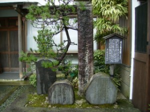
A stone monument at Yoshimura soba shop in Izushi, Toyo-oka City (my hometown)
Kogoro met two brothers, who were visiting Kyoto from Izushi in the Tajima Province (present-day Toyo-oka City). They helped him to escape from Kyoto and took him to their hometown. And in Izushi, Kogoro was living as a small businessman. He was once in Kinosaki, too. (See page for Toyo-oka)
After his hiding out in the Tajima Province, he went back to Choshu and joined the Satcho Alliance. Then, he played an important role in the new Meiji government.
Now take a look at the preserved castle town in Hagi, where these great people were living.
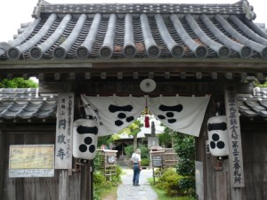
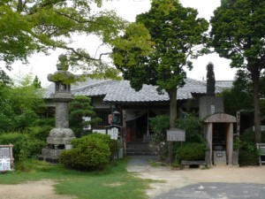
First, you’ll find Enseiji (Ensei temple). The chief priest kindly showed us around this temple.
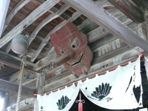
Tengu, a long-nosed goblin
When Shinsaku was small he would often play around here. It is said that he was scared of this Tengu mask.
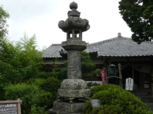
And the biggest stone lantern in Japan.
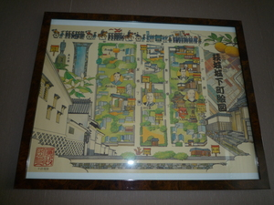
The entrance fee is 200 yen, and you’ll get a nice Hagi castle town map.
My husband put the map in the frame, and it is on the wall of his office room now! It is worth more than 200 yen!
*** When you visit a temple, a shrine, or other private houses on exhibition, remember to keep good manners.
Let’s get back to the street and continue to walk. Everywhere you can find the old times of Japan.
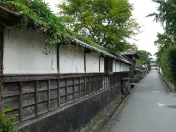
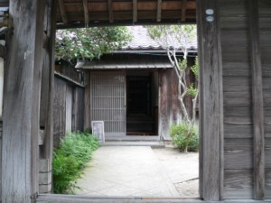
Look at the street, and the house gate… The priest of Enseiji also explained how difficult it is to repair or renovate houses here. There are many rules and restrictions in order not to change the way the town looks. We should appreciate the residents taking care of these houses.
After a while, we found a nice café and decided to take a rest.
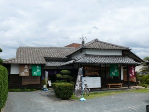
Kimono Style Café : This stylish café, which utilizes an old traditional Japanese house, stands across from Kido Takayoshi’s residence. They serve a variety of things. My husband had matcha (green tea) cake and matcha jelly. For him, it was a paradise! It was all his favorite! Inside the shop they also sell Hagi-yaki cups and plates. Hagi ware is a type of Japanese pottery that originated in the early 17th century, when some Korean potters reached Japan. They also rent out kimonos. Why don’t you take a walk in calm and graceful Hagi castle town with a nice kimono on! The shop staff will help you to dress up.
Kimono Style Café HP (Japanese)
We had a good rest with friendly staff at the café.
Let’s restart our exploration. Still many things to see.
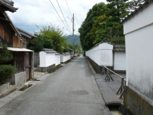
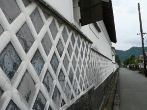
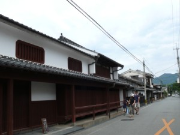
Here, it is the main street, where the Hagi daimyo would walk with his retainers.

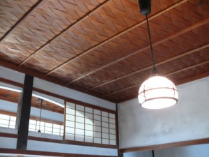
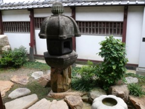
We also visited Kyu-Kubota-ke (former residence of Kubota). The entrance fee is only 100 yen, and you’ll be impressed when you see how elaborate this house is. If you can understand Japanese, a kind madam will show you around in the house. There are many things hidden and interesting in this residence. Worth visiting.
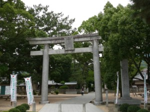
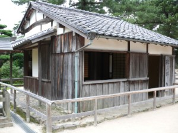
Take a bus to Shoin jinja (shoin shrine). Circulating bus services are operated by the city, and you can go around the city in this bus! This shrine is dedicated to Yosida Shoin, and behind the shrine you’ll find his school where he was teaching the youth including Takasugi Shinsaku.
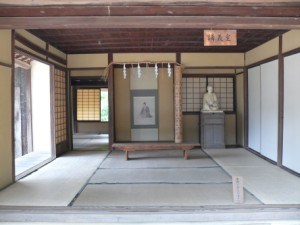
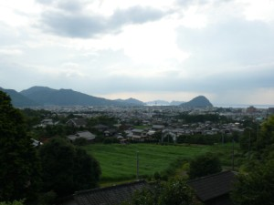
I was really impressed when I stood in front of this school (photo on the left). I was like, “I wish I could have studied here!” And we also visited his birthplace and took some photos like the one on the right. He might have been looking down the city like this. It’s just beautiful. Hagi City is really picturesque.
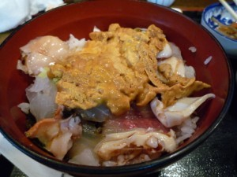
After a lot of walks and a lot of bus ride, we were very tired and extremely hungry! To fill our stomachs, we went to Isuzu. It’s a small restaurant run by a famous madam. Look at this Uni-don (a rice bowl dish with sea urchin)! She explained that her brother is a fisherman, and that the seafood is, thus, super fresh.
It was a really nice stay. We have a lot of memories now. A good place, and good people.
Here are some useful addresses:
I hope many people will visit Hagi City and find Japanese traditional beauty. Japan is not only modern but has a lot of traditions. There are still some people who are always devoting themselves to conservation of our old culture. I really respect them.